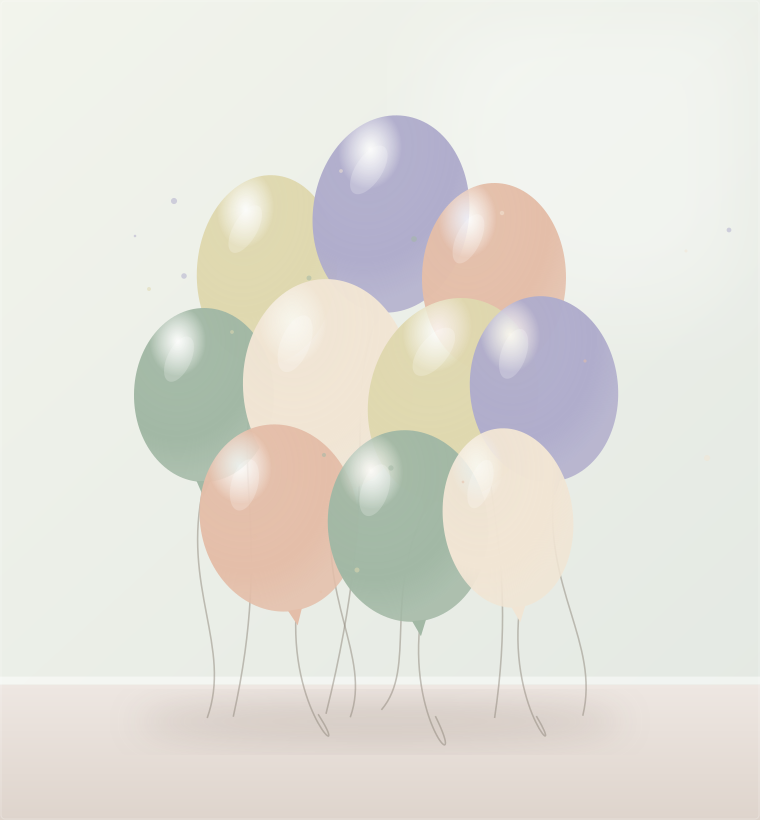

Пусть важным будет
только праздник.
Как подготовиться к заказу, согласовать доставку и выбрать композицию — собрали самое необходимое.
Подготовить заявку
Три шага
к вашему чуду.
Все важные детали вы согласуете с мастерской в переписке.
Перейти к заказуНабор или идею
Найдите понравившуюся композицию, цвет и повод в нашем демокаталоге.
Дату и детали
Сообщите желаемое время и район. Мастерская скажет, что возможно в нужную дату.
Итоговый заказ
Наличие, состав, цену, получение и оплату подтверждает только мастерская.
Отвечаем
на важное.
Здесь нет обещаний от имени мастерской — точные условия всегда лучше согласовать до заказа.
Как узнать цену композиции?
Выберите пример в каталоге или соберите свой набор, затем отправьте заявку в VK. Итоговая стоимость зависит от состава, размера, наполнения и других деталей.
Можно ли заказать к конкретному времени?
Укажите желаемую дату и время в форме. Мастерская подтвердит доступность времени в ответном сообщении; заполнение формы не резервирует интервал.
Есть ли доставка по Твери?
Возможность доставки, её стоимость и район обслуживания нужно уточнить напрямую у мастерской. Контакт доступен в VK.
Можно подобрать шары под цвет праздника?
Конструктор позволяет указать желаемую палитру. Доступные цвета, материалы и варианты композиции мастерская уточнит отдельно.
Как оплатить заказ?
Оплата на демонстрационном сайте не принимается. Способ и условия оплаты согласуйте с мастерской до подтверждения заказа.
Почему на сайте нет цен?
Это независимый демонстрационный проект. Без официального актуального прайса мы не показываем непроверенные суммы.